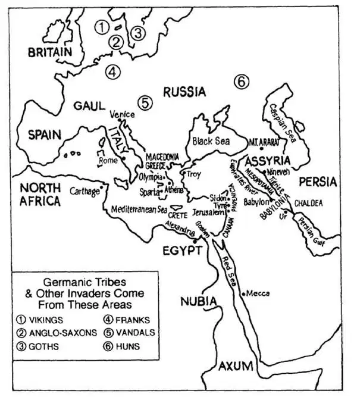
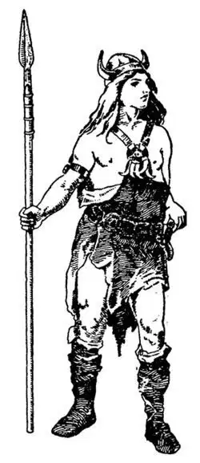
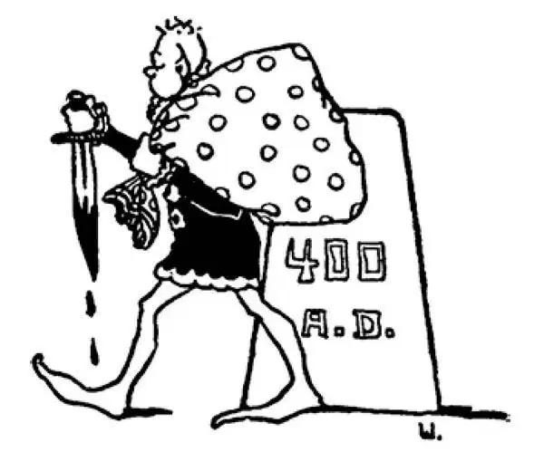

40
Barbarian Invaders
野蛮的入侵者

BUT Rome with the Roman Empire had had its day. The empire had risen as high as it could. It was Rome's turn to fall. It was Rome's turn to be conquered. But you cannot guess what people were to do the conquering and to be next in power.

Invasions from the north （来自北方的入侵）
For centuries there had been Germanic tribes living on the northern borders of the Roman Empire. Every now and then they tried to cross over the border into Roman lands, and the Romans had to be constantly fighting them to keep them back where they belonged. Julius Caesar had fought with them. So had Marcus Aurelius and so had Constantine. The Romans called these people barbarians , which is what they called all people who were not Romans. The Romans believed that all barbarians were fierce and warlike.
Many of these Germanic people had light hair and blue eyes; that is, they were what we call blonds. The Greeks and Romans and other people who lived around the Mediterranean Sea had dark hair and dark eyes. They were what we call brunettes.
Although some of the Germanic peoples had moved into the Roman Empire, many lived in sparsely populated areas, not in cities. They lived in huts made of wood, sometimes of branches woven together—like a large basket. The women raised vegetables and took care of the cows and horses. The men did the hunting and fighting and blacksmithing. Blacksmithing was very important, for the blacksmith made the swords and spears with which they fought and the tools with which they worked. That is why the name Smith was so honored among them.

Germanic warrior日耳曼战士
When the men went to battle they wore the heads of animals they had killed, an ox's head, horns and all, or the head of a wolf or bear or fox. This was to make themselves look fierce and to frighten the enemy.
Bravery was the chief thing the men thought good. A man might lie, he might steal, he might even commit murder, but if he was a brave warrior, he was called a good man. The Germanic tribes did not have a king. They elected their chiefs, and of course they always chose the man who was the bravest and strongest. But he could not make his son ruler after him. He was more like a president than a king.
These northern people had an entirely different set of gods from those of Greece and Rome. Their chief god, as you might guess, was the god of war, and they called him Woden. Woden was also the god of the sky. He was like the two Greek gods, Zeus and Ares, put together. Woden was supposed to live in a wonderful palace in the sky called Valhalla, and many tales are told of the wonderful things he did and of the adventures he had. Wednesday, which was once Wodensday, is named after him. That is why there is a letter d in this word, although we don't pronounce it.
After Woden, Thor was the next most important god. He was the god of thunder and lightning. He carried a hammer with which he fought great giants who lived in the far-off cold lands and were called ice-giants . Thursday, which was once Thorsday, is named after him.
Another god was named Tiu, and from his name we get Tuesday, and another Freya, from whom we get Friday, so that four out of seven of our days are named after Germanic gods, in spite of the fact that none of us believe in these gods.
Of the other three days of the week, Sunday and Monday of course are named after the sun and moon, and Saturday is named after a Roman god, Saturn.
About the year 400 A. D. these northern neighbors were becoming particularly troublesome to the Romans. They began to push their way down into the northern part of the Roman Empire, and after a few years the Romans could hold them back no longer. Two of these Germanic tribes went over into Britain, and the Romans who were living there found it wisest to get out, go back to Rome, and leave the country and its native people to the invaders.
These tribes who settled in Britain were known as Angles and Saxons. So the country came to be called the land of the Angles, or, for short, Angle-land . After the words Angle-land were said over for many years, they became England , which is what we call the country today. The people of England are still known by the full name Anglo-Saxons , and this is the name by which we call anyone descended from these tribes of Angles and Saxons who settled in Britain about 400 A.D.
Another tribe called the Vandals went into Gaul. Gaul is where France is now. Then they kept on down into Spain, stealing, smashing, burning, and destroying. They crossed over by boats into North Africa. They damaged or destroyed everything they came upon. So today when anyone damages or destroys property wickedly, we call him a vandal . If you cut up your desk, tear your books, or scratch names on walls or fences, you, too, are a vandal.
A tribe called the Franks followed the Vandals into Gaul, and there they stayed, giving the name France to that country.
The people north of Italy were the Goths. They had a leader by the name of Alaric. Alaric and his Goths crossed over the mountains into Italy and robbed or destroyed everything of value they could lay their hands on. They then entered Rome and carried away whatever they wanted, and the Romans could not stop them. But the worst was yet to come.
【中文阅读】
但是，罗马城和罗马帝国已过全盛时期。这个帝国的强盛已经达到了巅峰，现在轮到罗马走向衰落，轮到罗马被别的国家所征服了，可是你肯定猜不到哪个民族的人将征服罗马，并成为下一个世界霸主。
几千年来，日耳曼部落一直生活在罗马帝国的北部边界地区。他们时不时地穿过边界进入罗马境内，因此，罗马人不得不经常和他们交战，把这些人赶回他们自己的领土。尤利乌斯•恺撒和他们交战过，马可•奥勒留和君士坦丁也和他们交战过。罗马人把这些人叫做“野蛮人”，甚至把除了自己之外的所有人都叫做野蛮人。罗马人认为所有的野蛮人都是凶猛、好战的。
多数日耳曼人都是浅色头发，蓝色眼睛，也就是我们所说的金发碧眼。希腊人和罗马人以及其他生活在地中海周围的人都是深色头发，黑色眼睛。我们现在称他们黑发黑眼。
尽管有些日耳曼人已经迁移到罗马帝国，但他们多数都生活在人烟稀少的地区而不是在城市。他们住在木头做的小屋里，有时这种小屋就是用树枝编起来的——像个大篮子一样。女人们种菜，饲养牛马；男人们打猎，作战和打铁。打铁是非常重要的，因为铁匠可以制作战剑和长矛，还有各种用以生产的工具。这就是为什么“史密斯”（铁匠的音译）这个名字在他们中间非常受尊敬的原因。
每当男人们出去作战，他们都戴着自己杀死的兽头，公牛的头、角，或是狼、熊和狐狸的头。这样做是为了让他们看上去显得凶狠，让敌人感到害怕。
“勇敢”是男人们最看重的事情。男人可以撒谎，可以偷窃，甚至可以杀人，但如果他是个勇敢的战士，就可以被人说成是个好人。日耳曼部落没有国王，他们的首领通过选举产生，当然，他们总是选出最勇敢、最强壮的人。不过，首领不能让自己的儿子成为他的继任者，所以部落的首领更像是总统而不是国王。
这些北方民族的人信奉的一些神灵和希腊人、罗马人所信奉的神灵完全不是一回事。你也许能猜到，他们的主神是战神，叫沃登。沃登也是天神，他就像是希腊的两个神灵——宙斯和阿瑞斯的结合体。据说沃登住在天上一个叫瓦尔哈拉的美丽宫殿里，有很多童话讲述他的精彩故事和冒险经历。星期三（英文是Wednesday ）曾经写作Wodensday ，就是以沃登（Woden ）的名字命名的。因此，这个单词里面有个字母d ，但是我们并不发d 的音。
托尔是排在沃登后面的另一位最重要的神灵。他是雷电之神。他随身带着一把铁锤，用它来和住在远方寒冷地带的巨人们作战，这些巨人叫“冰巨人”。星期四（英文是Thursday ）以前是Thorsday ，就是以托尔（英文是Thor ）的名字命名的。
另一位神叫蒂乌（英文为Tiu ），人们以他的名字命名了星期二（英文Tuesday ）。 还有一位神灵叫弗蕾亚，星期五（英文Friday ）就源于她的名字“Freya”。因此，我们的一周七天中有四天都是以日耳曼神灵的名字命名的，虽然我们根本没人信奉这些神灵。
一周里剩下的那三天，星期天（Sunday ）和星期一（Monday ）当然是以日（Sun ）、月（Moon ）而命名的。而星期六（英文Saturday ）是用一位罗马神灵萨杜恩（Saturn ）的名字命名的。
大约在公元400年时，这些北方的邻居成了最让罗马人头痛的麻烦。他们开始流窜进入罗马的北部地区，这样过了几年，罗马人再也不能把他们驱逐出去了。这些日耳曼部落中有两支部族进入了不列颠地区，住在那里的罗马人发现最明智的做法就是离开那里，回罗马去，而把那块土地和当地的原住民让给这些侵略者。
在不列颠安顿下来的两支部落分别是盎格鲁人和撒克逊人，因此这个国家后来被叫做盎格鲁人的土地，或者简略地讲，就是“盎格兰”. “盎格兰”这个词说了很多年后，就变成了“英格兰”，这是我们今天对该国的称呼。英格兰人现在的全称仍然是“盎格鲁－撒克逊人”，而且我们把所有公元400年时在不列颠定居的盎格鲁和撒克逊部落的人的后代都叫做盎格鲁-撒克逊人。
另一支叫汪达尔的部落进入高卢地区，高卢就是现在的法国。接着，他们继续南下到西班牙，沿途烧杀抢掠。后来，他们又乘船到达北非。他们一路走到哪里，就在哪里大肆破坏。所以，现在当有人恶意地破坏、毁坏财物时，我们就称他为“汪达尔人”。如果你用刀子乱刻书桌、撕坏课本或在墙壁或围墙上乱写乱画，那你也是个汪达尔人了。
在汪达尔部落之后，有一支叫法兰克的部落进入了高卢，他们后来就定居下来，并把那个国家定名为“法国”。
意大利北部的民族是哥特人，他们有个领袖叫阿拉里克。后来，阿拉里克和他领导的哥特人翻山越岭进入了意大利，在那里洗劫并摧毁了所有他们见到的值钱的东西。接着，他们侵入了罗马，大肆抢掠任何他们想要的东西，罗马人却毫无办法阻止他们。但是，最糟糕的还在后面呢！

公元400年